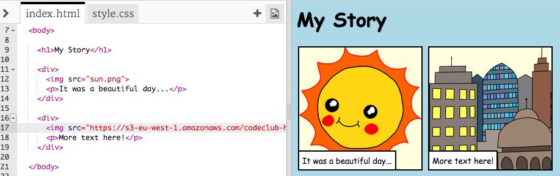

Last time...
Remember the cards we made last week? Check them out in the gallery!
Introduction
In this project, you’ll learn how to create your own webpage to tell a story, joke or poem.

Step 1: Decide on a story
Before you get coding, you’ll need to decide on a story to tell.
Activity Checklist
Think about the story you want to tell. It could be:
- A famous story;
- A story you have made up;
- Something that has happened to you or someone you know.
It doesn’t even have to be a story. It could be a joke, a poem, or anything else you want!
Step 2: Editing your story
Let’s start by editing the HTML content and CSS style of the story webpage.
Activity Checklist
- Open this trinket: https://trinket.io/html/7bfa446bba. Remember to log in!
You might remember from the ‘Happy Birthday’ project that webpage content goes in the
<body>of the HTML document.Go to line 7 of the code, and you should see the webpage content, which is inside
<body>and</body>tags.
Can you tell which tags are used to create the different parts of the webpage?

<h1>is a heading. You can use the numbers 1 to 6 to create headings of different sizes;<div>is short for division, and is a way of grouping stuff together. In this webpage, you’ll use it to group together all the stuff for each part of your story;<img>is an image;<p>is a paragraph of text.
Challenge: Make some changes
Edit the HTML and the CSS code to customise your webpage.

You can alter the colours used in the webpage, and you can also use fonts like Arial, Comic Sans MS, Impact and Tahoma.
If you need more help, you can use the ‘Happy Birthday’ project to help you.
Save Your Project
Step 3: Telling your story
Let’s add a second part to your story.
Activity Checklist
Go to line 50 of the code, and add in another set of
<div>and</div>start and end tags. This will create a new box for the next part of your story.
Add a paragraph of text inside your new
<div>tag.
Finally, you can add an image to your new box, by adding this code inside your
<div>tag:<img src="">Notice that
<img>tags are a bit different to other tags, as they don’t have an end tag.For HTML images, you need to add the source of the image, inside the speech marks. Let’s find an image to add to your story.
Go to jumpto.cc/cc-web-images, and find an image that you want to include in your story.
Right-click the image, and click ‘Copy image URL’. The URL is the address of the image.

Paste the URL between the speech marks in your
<img>tag. You should see your image appear!
If you have a Trinket account, you can also upload your own images to your webpage! To do this, click the image icon at the top of your trinket and then click ‘upload’.

Find your image on your computer, and drag it into your trinket.

You can then just add the name of your new image between the speech marks in your
<img>tag, like this:<img src="buildings.png">
Save Your Project
Challenge: Keep going!
Use what you’ve learnt in this project to finish telling your story! Here’s an example: